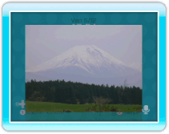

Vous pouvez présenter aux autres membres de votre groupe de conversation des photos enregistrées sur une carte SD ou des photos de votre bureau Wii.
14 |
Présenter des photos |
 |

Une fois la transmission terminée, les autres membres du groupe de conversation voient la photo s'afficher dans la salle de conversation. Cette photo n'est pas visible dans la salle des contacts.
|
 |
 |
 |